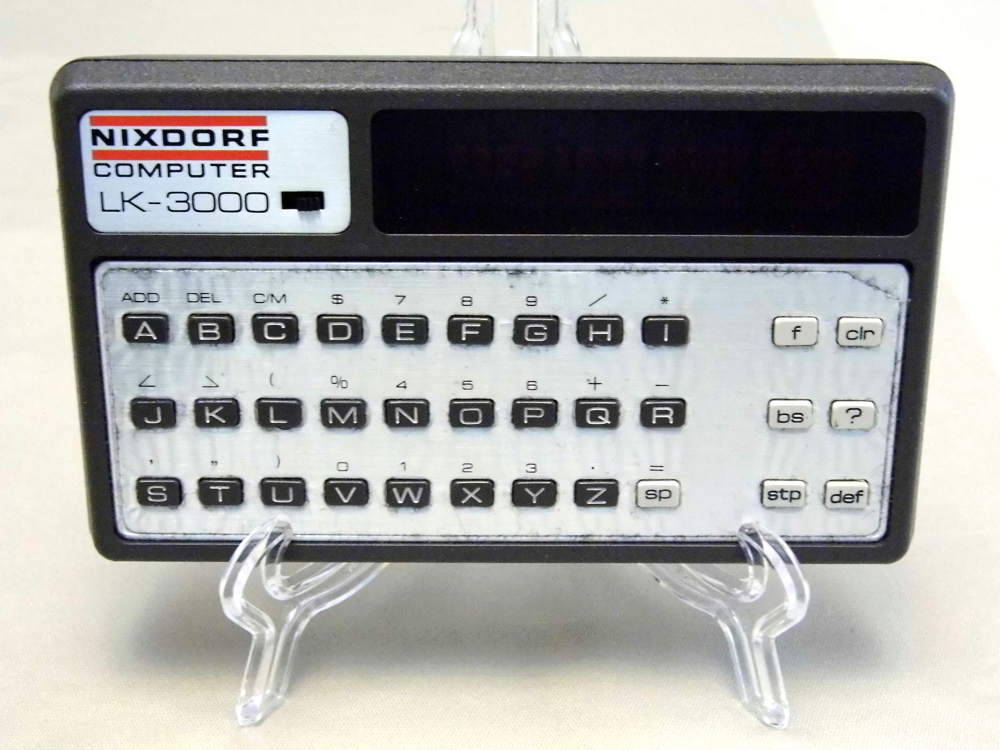

Lexicon LK-3000 (1978)
A pocket translator with no brain of its own — you swap the whole CPU and ROM cartridge by hand to change its function

Overview
The LK-3000 was a modular pocket computer released around 1978, sold under both the Lexicon and Nixdorf Computer AG brands, and best known as one of the first programmable language translators. It was a heavy, cigarette-box-sized slab with a QWERTY keyboard, a 16-character red LED display, a cartridge slot, and — crucially — no functioning brain of its own. As the Computer History Museum's catalog describes it, the base unit offered the keyboard, screen, and batteries but no internal CPU or RAM; all logic was supplied by swappable cartridges, each containing its own processor and ROM.
To change language or function you physically ejected the old cartridge and snapped in a new one, effectively swapping the machine's whole computing identity by hand. Applications ranged from English↔French/German/Spanish/Italian/Russian translators to calculators, memo pads, and organizers. Nixdorf Computer AG (Heinz Nixdorf's company, eventually Europe's fourth-largest computer maker) manufactured and distributed it, and a unit is preserved in the Computer History Museum (object 102673211).
Deep dive
The defining interaction is that the cartridge holds everything that makes the machine what it is — a full processor, its ROM, and for notepad modules CMOS RAM with a backup battery. The base provides only the keyboard-matrix decoder, MOS-LSI display driver, charging circuitry, and a power-switch detector. The LK-3000 is the museum's most literal 'hardware multiplexing' device: a shell that becomes whatever program you insert, the material ancestor of the game cartridge and the software-defined device.
In practice most users knew it as an electronic dictionary: slide in the French cartridge and the keys become a français-anglais translator over a scrolling 16-character LED readout — a traveler carrying a set of physical dictionaries in a pocket, each a different chip.
The design is preserved and documented by the Computer History Museum and by collector teardowns detailing the minimal base board and its fragile, custom cartridge connectors.
Team & pioneers
- Nixdorf Computer AG German manufacturer (Heinz Nixdorf's company) that produced and sold the LK-3000
- Lexicon pioneering translator brand under which the device was also sold
- Computer History Museum preserves the LK-3000 (object 102673211)